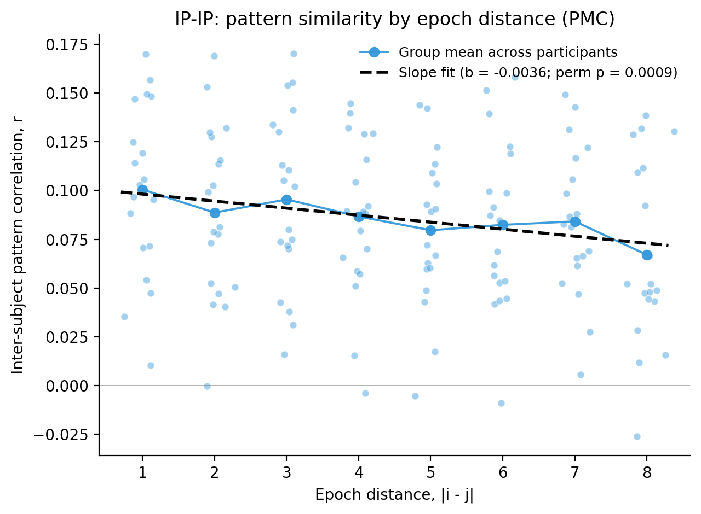
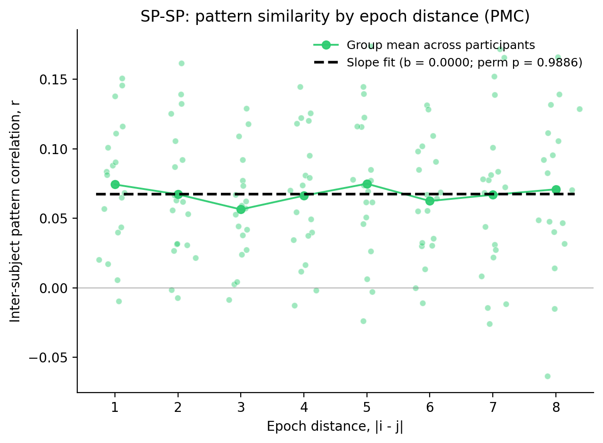
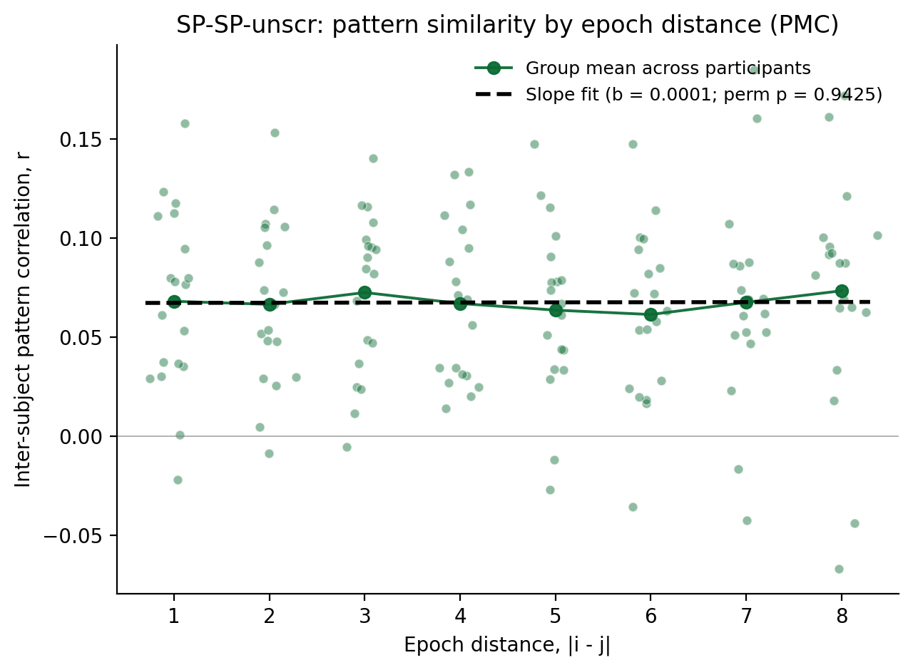
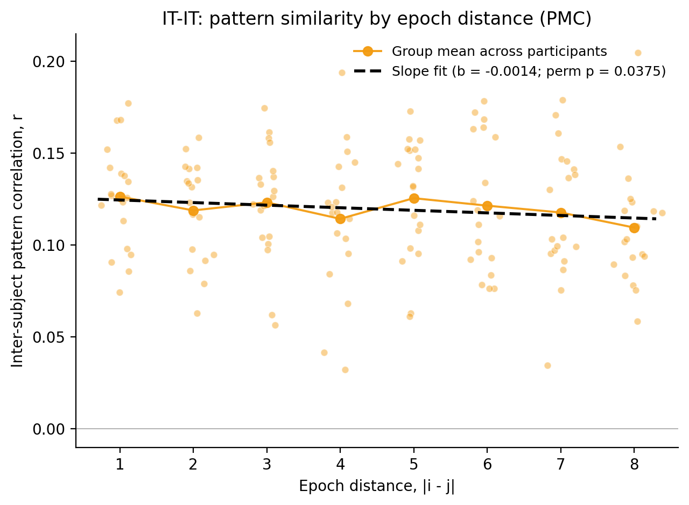
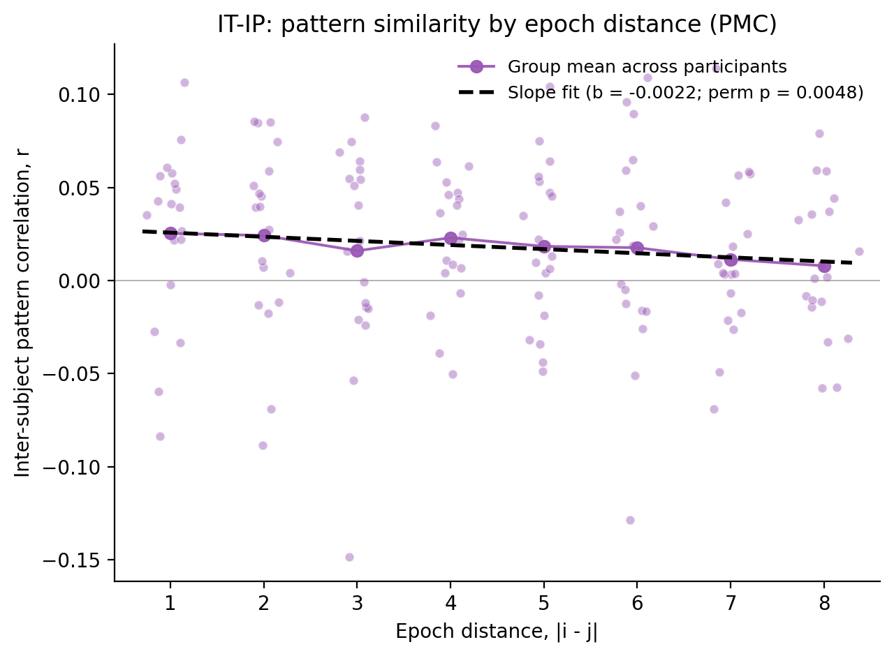

We tested whether the shared PMC pattern evolves across the narrative, by asking whether inter-subject pattern correlation (ISPC) between two interruption epochs declines with their forward distance d = |i − j|. ISPC was measured in a 15-second window spanning the ten TRs that began 7.5 s after interruption onset (the first five post-onset TRs were discarded to avoid hemodynamic carry-over from the preceding story segment). For every ordered pair of epochs (i, j) at distance d = 1 through 8, the Pearson correlation between the participant's PMC pattern at epoch i and the across-participant average PMC pattern of the other participants at epoch j was computed at every TR and averaged across the ten TRs; for each participant the mean ISPC at each distance was then taken. The per-participant slope of ISPC regressed on distance summarizes how steeply pattern similarity declines with distance, and the group slope is the across-participants mean. ISPC was evaluated under five inter-subject schemes: three within-condition (IP-IP, SP-SP, IT-IT), one across-condition (IT-IP), and SP-SP-unscr, in which the scrambled-pause epochs were re-ordered into the intact narrative sequence so that epoch distance reflects true narrative distance rather than scrambled presentation order. PMC voxels were defined by the project's anatomical PMC mask and per-voxel timecourses were z-scored across the entire run before analysis.
To test whether ISPC declines with epoch distance, we reshuffled each participant's per-distance ISPC means across the distance labels d = 1..8, recomputed that participant's slope, and recorded the group mean across participants; 10000 iterations built the null. The two-sided permutation p is (k + 1)/(10000 + 1), where k is the number of null group-mean slopes whose magnitude is at least as large as the observed slope. The table also reports the standard error of the group-mean slope, its 95% confidence interval (a t interval on the per-participant slopes), and a descriptive one-sample t-test on per-participant slopes.
Primary stats (unshaded) | Descriptive / context (light gray)
| Cond | Slope | SE | 95% CI | p (perm) | n | t | df | p (t) |
|---|---|---|---|---|---|---|---|---|
| IP-IP | -0.00360 | +0.00117 | [-0.00606, -0.00113] | 0.0009 | 19 | -3.067 | 18 | 0.0066 |
| SP-SP | +0.00001 | +0.00132 | [-0.00277, +0.00279] | 0.9886 | 19 | 0.010 | 18 | 0.9924 |
| SP-SP-unscr | +0.00007 | +0.00142 | [-0.00292, +0.00305] | 0.9425 | 19 | 0.047 | 18 | 0.9634 |
| IT-IT | -0.00140 | +0.00093 | [-0.00336, +0.00056] | 0.0375 | 19 | -1.504 | 18 | 0.1499 |
| IT-IP | -0.00222 | +0.00105 | [-0.00441, -0.00002] | 0.0048 | 19 | -2.120 | 18 | 0.0482 |
Each plot shows participant-level mean pattern correlation at each forward epoch distance (dots), the group mean across participants at each distance (solid line), and the fitted slope line (dashed).





A negative group-mean slope with p (perm) < 0.05 indicates pattern similarity declines with epoch distance. Condition codes as in Result 2.1.